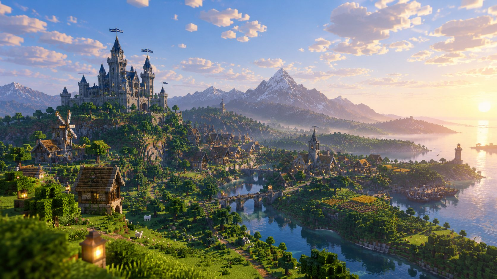

あなたも領主になれる。
自由な国家サーバー。
ゆる国家サーバーは、Minecraftのサバイバルで自分たちの「ステート」をつくり、建築や街づくり、経済、外交をのんびり楽しむサーバーです。
トップ画像はAI生成のイメージです。実際のゲーム画面ではありません。
どんなサーバー?
ゆる国家サーバーは、Minecraftのサバイバルを基盤に、自治の要素を加えて楽しめるマルチプレイサーバーです。
プレイヤーは自分のステートを設立し、その中では独自にルールや制度を作って自分たちの街を作ることができます。
一つの住処にとどまらず様々なステートを旅したり、あるいは一人で静かに暮らしてみたり、遊び方はあなた次第。
戦争やPVPは合意がある時のロールプレイに限定されるので、初心者の方でものんびりと楽しんでいただけます。
遊びの魅力
都市開拓
採掘、農業、建築。あなたの得意を生かし、町を発展させよう。
インフラ開発
インフラで世界を変えよう。道路や鉄道を引き、離れた街をつなごう。
自分たちの社会設計
独自の規則や制度を決め、その土地ごとの個性ある社会を作ろう。
ステートを越えた交流
貿易や共同事業、文化交流を通じて、人々と関係を築こう。